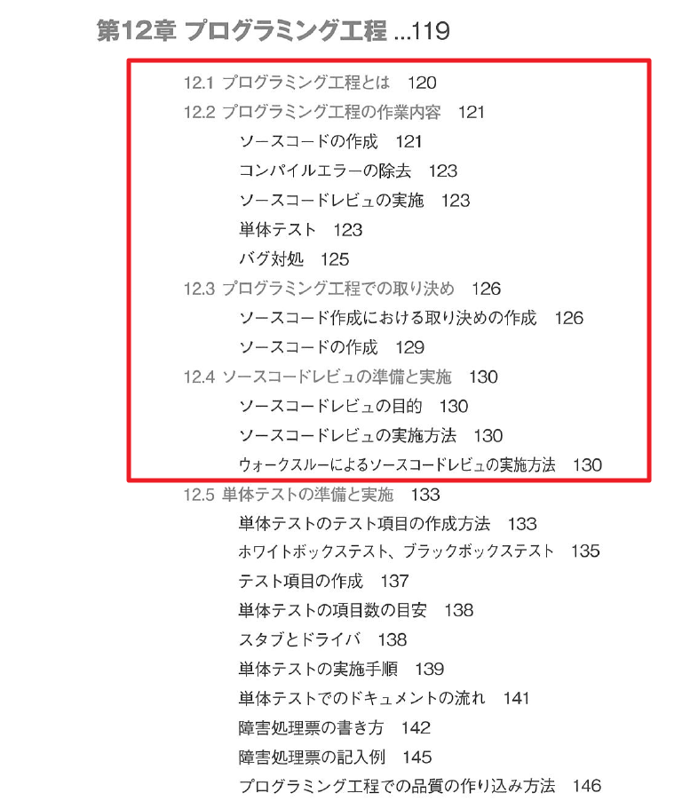
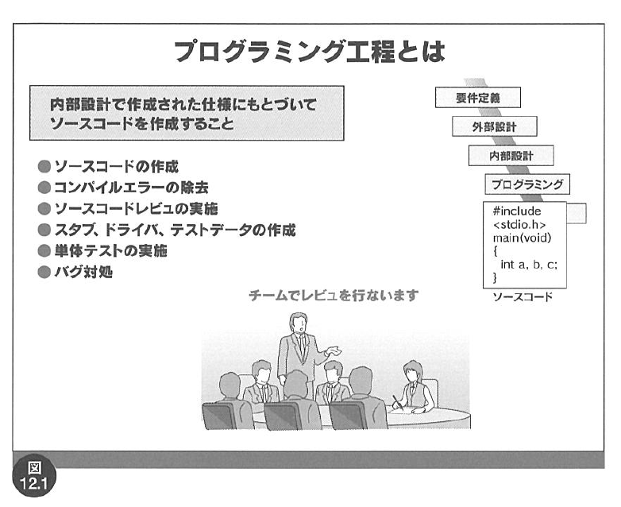
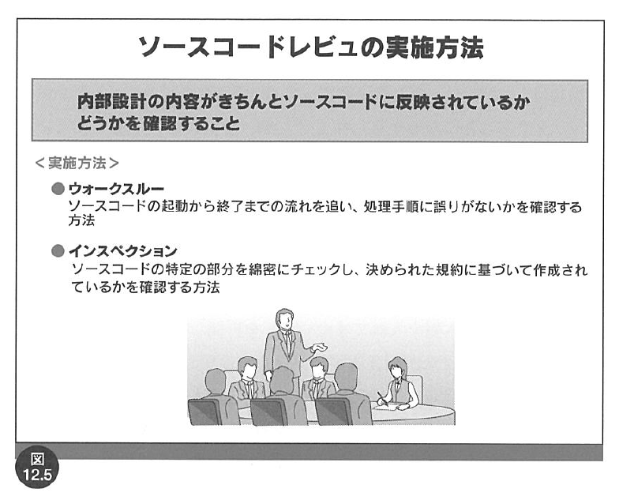

一覧に戻る

第12章 プログラミング工程
12.1 プログラミング工程とは

プログラミングだけではない
[Q24-1] プログラミング工程ではやらないものを選んでください
12.2 プログラミング工程の作業内容
((図12.2))
ソースコードの作成
ソースコード作成における取り決めを作成
単体テスト実施手順書の作成
ソースコード作成環境およびテスト環境の構築
バグ管理の手順や報告様式の整え、管理ツールの導入
内部設計書をもとにソースコードを作成
コンパイルエラーの除去
ソースコードレビュの実施
単体テスト
テストデータの作成
スタブ、ドライバの作成
ドライバ：テスト対象を呼び出す
P.124上
スタブ：下位モジュールの代わりをする
単体テストのテスト項目の洗い出し
単体テストの実施
バグ対処
障害処理票の起票
バグの分析
プログラミング工程といってもプログラミングだけではない
[Q24-2] プログラミング工程でやるものを選んでください
12.3 プログラミング工程での取り決め
ソースコード作成における取り決めの作成
((図12.3))
プログラミング規約
変数名やファイル名の名命名則など
P.127
あらがじめ決めておくと他人のコードも読みやすい
クラス設計
クラスやメソッドとデータとの関係
共有フォルダの更新方法
テスト項目の選定方法、テスト実施方法
障害処理票の起票方法
ソースコードの作成
((図12.4))
コードレビュを行う
コーディングを始める前に書き方を決めておく
[Q24-3] プログラミング規約に相当するものを選んでください
12.4 ソーコードレビュの準備と実施
ソースコードレビュの目的
内部設計と照らし合わせる
ソースコードレビュの実施方法

ウォークスルーが適している
ウォークスルーによるソースコードレビュの実施方法
((図12.6))
P.132上
内部設計書を参照しながら
P.132下
指摘事項を記録表に記入する
[Q24-4] ソースコードレビュで主に参照する文書を選んでください
教科書（図はすべてこちらより引用）：
鶴保征城，駒谷昇一著 “ずっと受けたかった ソフトウェアエンジニアリングの授業2” 翔泳社
一覧に戻る